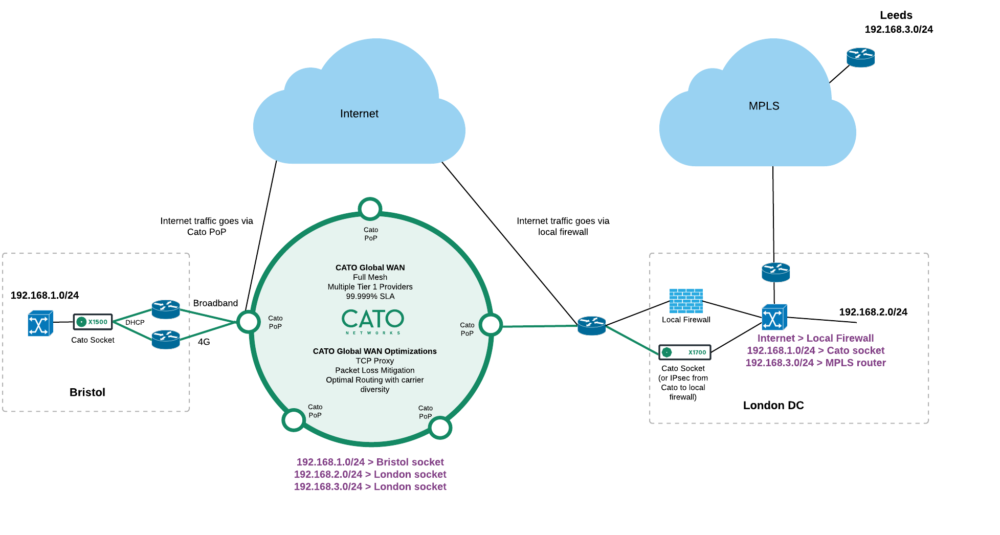

Why this matters
Most organisations that buy Cato are not building a WAN from scratch — they are leaving one. MPLS contracts stagger across regions, some sites have circuits with years left to run, and the applications in the datacentre must stay reachable from every site on every day of the migration. The deck behind this page states the objectives plainly:
- Co-existence during migration — Cato and MPLS run side by side, for as long as needed.
- From MPLS to an elegant future network design — migrate to the target architecture, not a copy of the old one.
- Seamless integration — the datacentre bridges both worlds with no application changes.
- Minimise service disruption — each site cuts over on its own schedule, with dual last miles from day one.
- New sites talk to current sites — full any-to-any reachability between migrated and legacy sites, throughout.
Why WAN migrations stall
The big-bang trap
Flag-day cutovers concentrate all the risk in one change window. One misrouted prefix and every site loses the datacentre — so the migration gets postponed, again.
Contract overlap
MPLS terms rarely end on the same date. Sites need to leave as their circuits expire — which means the interim network must work for months, not days.
The in-between network
The hard part isn't either end state — it's the middle: who routes between the new WAN and the old one, and who can prove it's working at any point in time?
“When your MPLS renewal lands, which sites could you move tomorrow — and which are stuck because other sites still need to reach them? Who owns the routing design for the in-between state, and how long do you have to run it?”
Co-existence by design
The pattern is simple and repeatable. The datacentre gets a socket first — it becomes the bridge between both networks. Its socket advertises not only the local DC prefix but also the prefixes of every site still on MPLS, reached via the DC LAN and the existing MPLS CE router. Each branch then migrates on its own schedule: drop in a socket with broadband and 4G last miles, and it is instantly on-net to the DC and — transiting the DC — to every site still on MPLS. Nothing about the legacy network changes until its circuit is switched off.
Co-existence by design
Any prefix behind any socket is routable — including MPLS-site prefixes reached via a static route at the DC socket. New and current sites talk throughout.
Site-by-site cutover
Sockets are zero-touch: ship, plug in broadband and 4G, and the site is on-net. Each site moves as its MPLS term expires — no synchronised change windows.
An elegant end state
You migrate to the target design — full-mesh any-to-any over the global backbone with optimisation built in — not a re-implementation of hub-and-spoke MPLS.
Minimal disruption
Dual last miles from day one, and internet egress can stay on the DC firewall until you're ready to move it — users notice nothing during the transition.
Who routes what during the transition
The original deck diagram below shows the full picture: Bristol already migrated (X1500, broadband + 4G, internet breakout at the Cato PoP), London DC bridging both networks (a socket — or IPsec from Cato to the local firewall — plus the firewall and MPLS router), and Leeds still on MPLS. The deck illustrates the DC socket as an X1700; in the demo tenant, London DC runs an X1500.

The two routing tables in that diagram are the whole trick — worth walking line by line in the room:
| Destination | Site | Cato routing table | London DC local routing |
|---|---|---|---|
| 192.168.1.0/24 | Bristol (migrated) | → Bristol socket | → Cato socket |
| 192.168.2.0/24 | London DC | → London socket | local LAN |
| 192.168.3.0/24 | Leeds (still on MPLS) | → London socket | → MPLS CE router |
| Internet | — | Bristol: breakout at Cato PoP | → local firewall |
As each MPLS site migrates, its prefix simply moves from “→ London socket” to its own socket in the Cato routing table, and the corresponding static route is deleted at the DC. When the last site moves, the MPLS router and the contract behind it are decommissioned.
How to run the demo
The “How to” slide in the original deck was blank, so this runbook was authored for the library from the co-existence topology above and the standard demo tenant. Review it against your tenant before first customer use.
-
Walk the co-existence topology
Open on the diagram above. Three sites, three states: Bristol already migrated, Leeds untouched on MPLS, London DC bridging both. Ask which of their sites map to each role — most prospects can name their “London DC” immediately.
-
Show how the DC socket advertises MPLS-site routes
Network → Sites
Open London DC and show its networks and static routes: the local DC range, plus the Leeds prefix (192.168.3.0/24) with a next hop of the MPLS CE router on the DC LAN. This is the entire integration — no BGP redesign, no changes on the MPLS side.
-
Show the routing table both networks share
Monitor → Topology
Show every site, its tunnels and its ranges in one view — migrated prefixes behind their own sockets, the Leeds prefix behind London DC. If you have Socket WebUI access, the socket's routing table tells the same story from the site's point of view.
-
Simulate the cutover of one site
Network → Sites
Create a new socket site to play the part of Leeds on cutover day (use a spare lab socket, e.g. the Bracknell Lab X1500, or just walk the site-creation flow): assign the 192.168.3.0/24 range to the new site, delete the static route at London DC, and the Cato routing table updates. That is the whole change window.
-
Prove new and current sites keep talking
Monitor → Topology
Generate traffic between a migrated site and the DC (file share, RDP, ping) and show the live tunnels and throughput. Then Monitor → App Analytics for the same flows attributed to sites and applications — the visibility they never had on MPLS.
-
Discuss internet egress during the transition
Security → Internet Firewall
Two valid interim patterns, per site: keep breaking out via the DC firewall (nothing changes for compliance or SIEM feeds), or break out directly at the Cato PoP with the full security stack — as Bristol does in the diagram. Show that this is a per-site policy choice, not an architectural fork.
-
Close on the end state
When the last site migrates: delete the static route, decommission the MPLS router, terminate the contract. What remains is the elegant target design — every site any-to-any on the global backbone, one policy, one console.